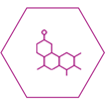

Троксевазин® 2 % — гель №1*,1 для лечения симптомов варикоза**,3
*по продажам в деньгах
Проверенный временем2 препарат против тяжести и боли в ногах при варикозе***. Способствует укреплению вен и повышению их тонуса3.
Помог уже нескольким поколениям2 справиться с симптомами варикоза4,**:
-

Усталость
и тяжесть
в ногах -
Синяки5
-
Боли и отеки
в ногах -
Тромбофлебит
Секрет популярности Троксевазин®
Гель 2 % прост
- 
Действующее вещество препарата — Троксерутин3
-
Действующее вещество препарата — Троксерутин3
-
Действующее вещество препарата — Троксерутин3
Сэкономьте6 до 25% при покупке большой упаковки Троксевазин® Гель 2 % 100 г.

Как использовать?3
- 1
Утром и вечером
- 2
Нанести полоску геля длиной 1-3 см
- 3
Слегка втереть до полного впитывания
- 4
Можно наносить под окклюзионную повязку
Как применять при беременности3
Препарат может быть использован в II и III триместрах беременности, если ожидаемая польза для мамы выше, чем потенциальный риск для ребенка.
Перед применением препарата беременным обязательно нужно проконсультироваться с врачом.

Другие продукты линейки
Троксевазин®

Препарат следующего поколения —
Троксевазин® Нео с усиленной7 трехкомпонентной формулой8
Для лечения симптомов варикоза** изнутри используйте таблетки Троксактив9
Инструкция по медицинскому применению препарата Троксевазин® гель 2 %
Регистрационный номер
Торговое наименование препарата
Международное непатентованное наименование
Способ применения и дозы
Побочное действие
Передозировка
Узнайте больше о варикозе
Симптомы варикоза
Посмотрим на статистику: по данным исследователей, большая часть пациентов до обращения к специалисту по проблемам с венами, флебологу, имела опыт...
Анализы при варикозе
Посмотрим на статистику: по данным исследователей, большая часть пациентов до обращения к специалисту по проблемам с венами, флебологу, имела опыт...
Кратко о варикозе
Посмотрим на статистику: по данным исследователей, большая часть пациентов до обращения к специалисту по проблемам с венами, флебологу, имела опыт...
** При хронической венозной недостаточности
*** При симптомами хронической венозной недостаточности
1. В категории наружных венотоников, по продажам в деньгах 2018-2022, АЙКЬЮВИА
2. Троксевазин® используется в России с 1981 г. РУ Б-8-242 №2654
3. Инструкция по медицинскому применению лекарственного препарата Троксевазин П N012713/02
4. Симптомы хронической венозной недостаточности
5. Гематом.
6. Скидка экономии на гр. по сравнению упаковкой 40г
7. По сравнению с Троксевазин® гель 2 %
8. Инструкция по медицинскому применению лекарственного препарата Троксевазин® Нео ЛП-002139
9. Инструкция по медицинскому применению лекарственного препарата Троксактив ЛП-№ (000726)-(РГ-RU)